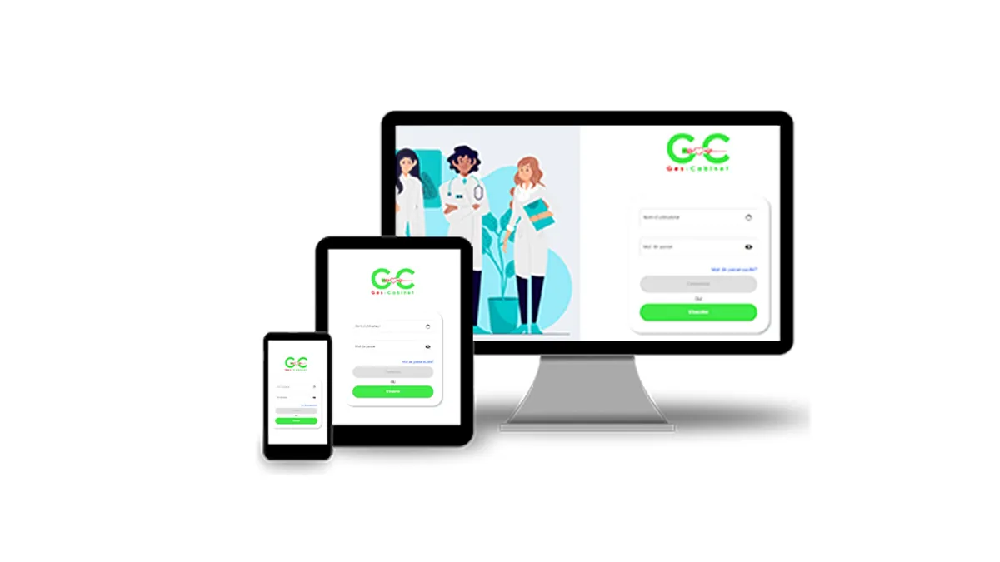
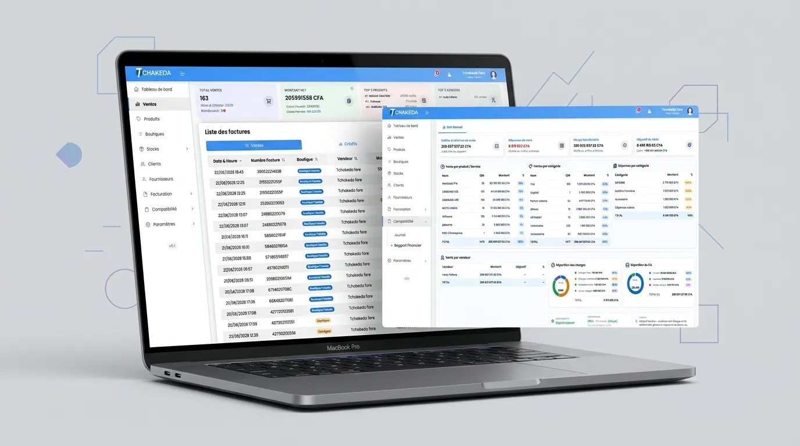
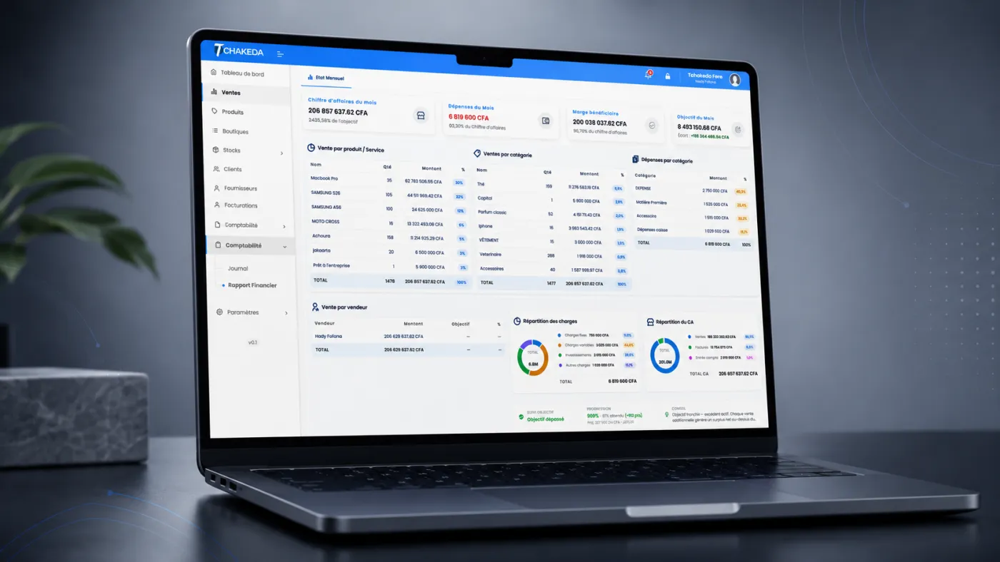
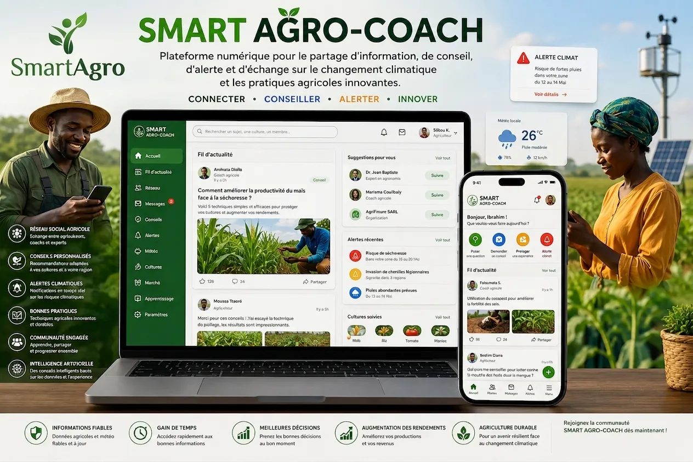

En production · Groupe Xpert Pro
Tchakeda
Isoler 214 entreprises dans une seule instance.
Plateforme SaaS multi-tenant de gestion d'entreprise — conception, architecture et développement Full Stack
- 214+ entreprises inscrites
- 381+ utilisateurs actifs
Responsable Développement · Groupe Xpert Pro
Je construis le logiciel de l'économie réelle en Afrique de l'Ouest — des PME aux mines, du backend Java à l'interface.
Développeur Full Stack avec 4+ ans d'expérience, spécialisé en Java / Spring Boot et Angular. Depuis février 2025, je dirige le département développement au Groupe Xpert Pro — architecture applicative, choix technologiques, sécurité et accompagnement de l'équipe.
Côté produit, Tchakeda : une plateforme SaaS multi-tenant en production, avec 214+ entreprises et 381+ utilisateurs. Côté FinTech, une application de microfinance chez AfriCred : depuis un wallet connecté à Orange Money, les clients épargnent, demandent et remboursent leurs prêts, obtiennent une carte virtuelle et échangent avec les agents d'assistance. Côté web, la refonte complète du site du Groupe ATC, en HTML, CSS et JavaScript, avec son propre système de mouvement.
PME, microfinance, agriculture, industrie : quatre problèmes réels, résolus en production.
En production · Groupe Xpert Pro
Isoler 214 entreprises dans une seule instance.
Plateforme SaaS multi-tenant de gestion d'entreprise — conception, architecture et développement Full Stack
Démonstration · isolation multi-tenant
Choisissez une entreprise, ou encaissez une vente au hasard. Son tableau de bord se met à jour ; les 213 autres n'en voient rien.
POST /api/ventes · JWT { tenant_id: 87 }
… WHERE tenant_id = 87
200 OK · 1 entreprise mise à jour sur 214, les 213 autres n'ont rien vu
Boutique de démonstration : identifiants et montants fictifs, architecture réelle de Tchakeda.
Refonte · prête pour la mise en ligne
Faire comprendre un groupe industriel de 9 pays en quelques secondes.
Refonte complète du site institutionnel d'un groupe de construction métallique et de projets miniers : 29 pages en HTML, CSS et JavaScript, sans framework, animées autour d'un seul geste, le trait orange du traceur de plans.
Démonstration animée : un rechargement Orange Money crédite le wallet, une partie est épargnée, l'échéance du prêt est remboursée depuis le wallet, une carte virtuelle est activée, puis un agent d'assistance répond au client.
CTO · 2022 – 2024
Demander et rembourser un prêt depuis son téléphone.
Institution de microfinance au service des micro-entrepreneurs, TPE et PME.
Demande de prêt Orange Money ⇄ Wallet Remboursement
Démonstration animée : une agricultrice publie un texte et une photo depuis l'application mobile Ionic ; la publication passe par l'API Spring Boot et apparaît sur le site Angular, puis reçoit des J'aime et un commentaire de coach. Elle écrit ensuite au coach dans la messagerie, avec une photo ; le coach répond depuis le web et la réponse revient sur son téléphone. La météo est servie depuis le cache Redis.
Projet actuel · Groupe Xpert Pro
Servir le web et le mobile avec une seule API.
Plateforme numérique de conseil agricole — un réseau social où agriculteurs et coachs publient (texte et photos), échangent en messagerie et reçoivent des alertes climatiques.

Plateforme de prise de rendez-vous médical.
Angular · Spring Boot · Spring Security · MySQL
Voir le siteMise en relation entre demandeurs d'emploi et recruteurs.
Web
Voir le siteRéférences professionnelles disponibles sur demande.
Refusé : Logique métier dans les controllers
À la place : Controller → Service : il reçoit, il délègue
Les controllers reçoivent et délèguent — la logique appartient aux services. Un controller gonflé est le premier signe d'une architecture non maintenable.
Refusé : Déploiement sans pipeline CI/CD
À la place : Branche de test → validation → GitLab CI → production
Chaque release passe d'abord sur la branche de test — l'équipe valide, puis GitLab CI prend le relais automatiquement vers la production : build, Docker, déploiement.
Refusé : Credentials en dur dans le code
À la place : Secrets dans l'environnement ou un vault
Mots de passe, clés API, secrets — ils vivent dans les variables d'environnement ou un vault, jamais dans le dépôt Git.
Refusé : Multi-tenant sans isolation stricte
À la place : Filtre tenant_id dans Spring Security, à chaque requête
Chaque requête filtrée par tenant_id au niveau Spring Security — pas de confiance côté client, pas de fuite cross-tenant possible.
Refusé : Livrer sans avoir testé le cas nominal
À la place : Golden path couvert avant chaque mise en production
Avant toute mise en production, le golden path est couvert — que ce soit par tests unitaires, tests d'intégration ou validation manuelle documentée.
Refusé : Session serveur pour une API REST
À la place : JWT stateless, aucun état serveur
Une API REST est stateless par définition. JWT embarquant les claims nécessaires — aucun état serveur, scalabilité horizontale préservée.
Expériences professionnelles, puis formation.
Février 2025 – Présent
Groupe Xpert Pro — Bamako, Mali
Décembre 2022 – Présent · à distance depuis 2024
Groupe ATC — Bamako, Mali
Leader dans les services miniers et industriels, 7 filiales à travers le monde.
2022 – 2024
AfriCred — Bamako, Mali
Institution de microfinance au service des micro-entrepreneurs, TPE et PME.
02/2026 – 05/2026
University of Alberta via Coursera
Certificat · with Distinction
Formation en ligne sur l'architecture logicielle, dispensée par l'Université de l'Alberta et proposée via Coursera.
Vérifier l'authenticité de mon attestation09/2022 – 12/2022
LearnQuest
Certificat Coursera
Formation intensive sur Spring Boot et les contrôleurs REST, dispensée par LearnQuest.
Vérifier l'authenticité de mon attestation2021 – 2022
Orange Digital Kalanso — Bamako, Mali
Certificat physique
Formation intensive en développement Web & Mobile — acquisition de compétences techniques avancées en développement full stack.
2021 – 2022
Simplon.co
Certificat physique
Consolidation des compétences de développeur web & mobile au travers d'une formation intensive à distance.
2018 – 2019
Institut Privé IP-SMART — Bamako, Mali
2015 – 2016
Lycée Moderne de Mopti
Ce que mes collaborateurs disent de mon travail.
M. Fofana est un développeur vraiment de taille. Rigoureux, ponctualité et innovation sont entre autres les qualités que j'ai remarquées chez Hady.
Hady est un développeur rigoureux qui possède un esprit d'équipe énorme. Responsable, assidu et innovant, il fait preuve d'un réel sens du leadership technique.
J'ai eu à collaborer avec Hady Fofana et je peux témoigner de la qualité de ses livrables. Sérieux, compétent et fiable — je le recommande vivement.
Vous construisez un produit pour l'économie réelle ? Parlons-en — je réponds sous 24 h.
En ce moment
Construction
Tchakeda — développement continu piloté par les retours clients et consultants. Smart Agro — messagerie instantanée agriculteurs ↔ coachs et notifications en temps réel.
Apprentissage
Flutter · Architecture distribuée · Design patterns avancés Java.
Localisation
Bamako, Mali — disponible en remote.
Disponibilité
Ouvert aux missions freelance et opportunités full-time.
Téléphone :
GitHub
Case Study · Groupe Xpert Pro
Plateforme SaaS multi-tenant de gestion d'entreprise — chaque entreprise cliente crée et gère ses propres utilisateurs, isolés des autres tenants.


Contexte
Les PME maliennes manquaient d'outils de gestion adaptés — trop chers, non localisés, inadaptés au terrain. La mission : une plateforme en français, abordable, où chaque entreprise inscrite devient un tenant isolé et crée librement ses propres utilisateurs (employés, gestionnaires) sans jamais croiser les données d'une autre.
Architecture
Base de données partagée : chaque table (entreprises, utilisateurs, données métier) porte un tenant_id. Spring Security filtre automatiquement chaque requête — un utilisateur ne peut accéder qu'aux données de son entreprise. Backend Spring Boot, frontend Angular SPA, cache Redis, déploiement Docker via GitLab CI.
Angular Spring Boot + JWT MySQL tenant_id Redis Docker / GitLab CI
Décisions clés
Shared schema plutôt que schema-per-tenant
Un schéma par client est plus isolé mais ingérable à l'échelle — 214+ bases à migrer et à maintenir séparément. Avec le shared schema et tenant_id, une seule migration couvre tous les clients instantanément.
Redis pour les permissions, pas juste les sessions
Chaque requête vérifiait les droits en base (rôles, modules actifs par tenant). Cache Redis à 15 min : la charge MySQL aux heures de pointe baisse significativement sans compromettre la sécurité.
JWT embarquant tenant_id et rôles utilisateur
À la connexion, le JWT de chaque utilisateur embarque son tenant_id et ses rôles. L'API identifie instantanément à quelle entreprise appartient la requête — auth stateless, zéro appel DB, isolation garantie à chaque endpoint.
Case Study · Groupe Xpert Pro
Plateforme numérique agricole web + mobile — réseau social entre agriculteurs et coachs, alertes climatiques en temps réel. Soutenu par le PNUD et le programme TADAMON Food Security.

Contexte
Les agriculteurs maliens manquaient d'accès à des conseils agronomiques fiables et d'informations climatiques locales. La mission, portée par le PNUD et l'accélérateur TADAMON Food Security : construire une plateforme où coachs et agriculteurs échangent, partagent des pratiques et reçoivent des alertes météo en temps réel adaptées à leur zone.
Architecture
API REST Spring Boot consommée par deux clients : une SPA Angular (web) et une application mobile Ionic/Angular. OpenWeatherMap fournit les données climatiques localisées. Redis cache les réponses météo pour réduire les appels API externes. Déploiement Docker via pipeline CI/CD.
Angular Web Ionic Mobile Spring Boot MySQL Redis OpenWeatherMap
Décisions clés
Ionic pour le mobile, Angular pour le web
Partage du maximum de code métier entre les deux clients. Un seul codebase Angular pour la logique, deux surfaces (browser et mobile natif) — productivité maximale avec une équipe réduite.
Cache Redis sur les données OpenWeatherMap
Les alertes climatiques sont consultées fréquemment mais changent peu en une heure. TTL 30 min sur les réponses météo par localisation — quota API préservé, latence réduite pour l'utilisateur final.
Réseau social fermé entre agriculteurs et coachs
Deux rôles distincts avec des droits asymétriques : les coachs publient des conseils validés, les agriculteurs interagissent et signalent des problèmes terrain. Modération intégrée pour maintenir la qualité des échanges.